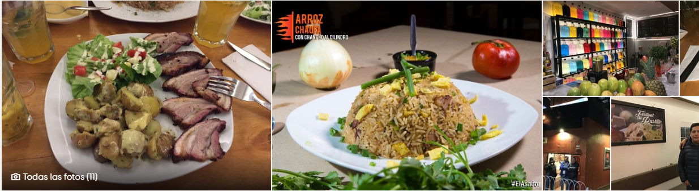

<nav class="navbar navbar-dark bg-dark">
    <!-- Navbar content -->
    <h1 class="navbar-brand">El Asador</h1>
    <form class="form-inline">
        <input class="form-control mr-sm-2" type="search" placeholder="Search" aria-label="Search">
        <button class="btn btn-outline-success my-2 my-sm-0" type="submit">Search</button>
    </form>
</nav>
<div id="carouselExampleIndicators" class="carousel slide" data-ride="carousel">
    <ol class="carousel-indicators">
        <li data-target="#carouselExampleIndicators" data-slide-to="0" class="active"></li>
        <li data-target="#carouselExampleIndicators" data-slide-to="1"></li>
        <li data-target="#carouselExampleIndicators" data-slide-to="2"></li>
    </ol>
    <div class="carousel-inner">
        <div class="carousel-item active">
            
        </div>
        <div class="carousel-item">
            
        </div>
        <div class="carousel-item">
            
        </div>
    </div>
    <a class="carousel-control-prev" href="#carouselExampleIndicators" role="button" data-slide="prev">
        <span class="carousel-control-prev-icon" aria-hidden="true"></span>
        <span class="sr-only">Previous</span>
    </a>
    <a class="carousel-control-next" href="#carouselExampleIndicators" role="button" data-slide="next">
        <span class="carousel-control-next-icon" aria-hidden="true"></span>
        <span class="sr-only">Next</span>
    </a>
</div>